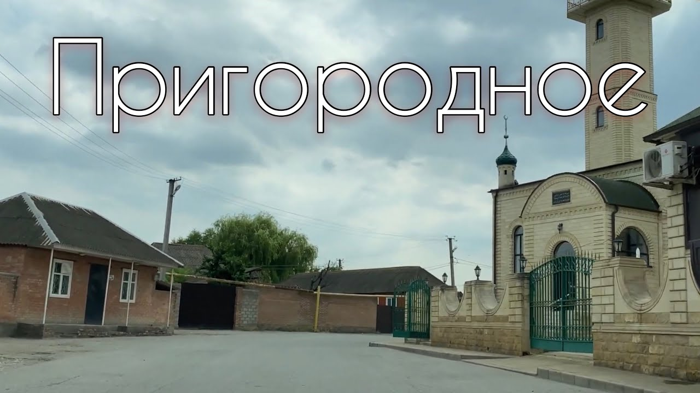

Гера — город в немецкой земле Тюрингия. С населением около 93 000 человек он является третьим по величине городом Тюрингии после Эрфурта и Йены, а также самым восточным городом Тюрингенской городской цепочки — почти прямой линии, состоящей из шести крупнейших городов Тюрингии от Айзенаха на западе через Готу, Эрфурт, Веймар и Йену до Геры на востоке. Гера — крупнейший город в Фогтланде и одна из его исторических столиц наряду с Плауэном, Грайцем и Вайдой. Город расположен в Восточно-Тюрингенской возвышенности, в широкой долине Белой Эльстер, между Грайцем (в верховьях) и Лейпцигом (в низовьях). Гера расположена в Центральногерманском столичном регионе, примерно в 60 километрах (37 милях) к югу от крупнейшего города Саксонии Лейпцига, в 80 километрах (50 милях) к востоку от столицы Тюрингии Эрфурта, в 120 километрах (75 милях) к западу от столицы Саксонии Дрездена и в 90 километрах (56 милях) к северу от баварского города Хоф (Заале).
Впервые упомянутый в 995 году и превратившийся в город в 13 веке, Гера имеет историческое значение как одна из главных резиденций герцогского дома Ройссов, а впоследствии столица княжества Ройсс-Гера (1848-1918) и Народного государства Ройсс (1918-1920), одного из многих микрогосударств, из которых состоял регион Тюрингия, прежде чем они были объединены в Тюрингию в 1920 году.
В XIX веке Гера стала центром текстильной промышленности и пережила период бурного роста. В 1952 году город также стал административным центром ГДР и одной из столиц административного округа Гера (Bezirk). В 1990 году Гера вошла в состав воссозданной земли Тюрингия. Утрата административных функций, а также промышленного потенциала (вызванная как структурными изменениями в европейской текстильной промышленности, так и изменениями в экономической системе после воссоединения Германии) привела к затяжному экономическому кризису в городе.
С 1990 года многие здания в Гере были отреставрированы, а для стимулирования экономики города были реализованы крупные градостроительные программы, такие как Федеральная выставка садоводства 2007 года. Среди достопримечательностей — сохранившиеся здания эпохи королевских резиденций, а также множество общественных и частных зданий, построенных в период экономического расцвета с 1870 по 1930 год. В Гере в 1891 году родился знаменитый художник Отто Дикс.